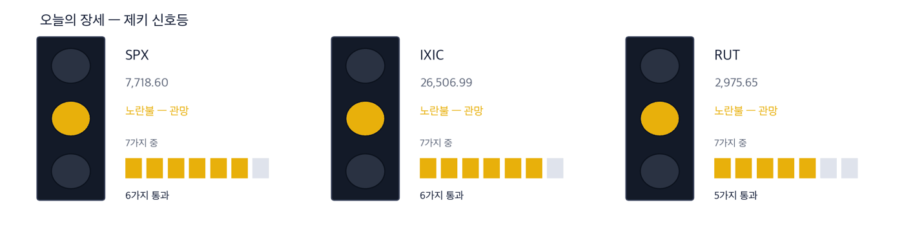
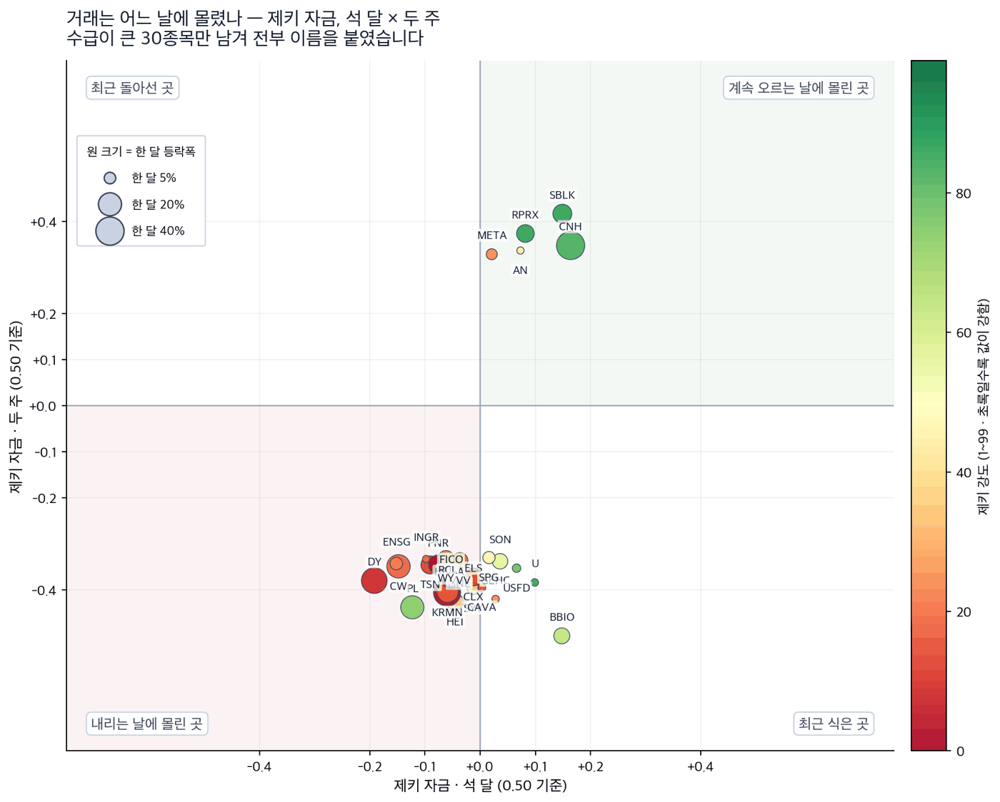
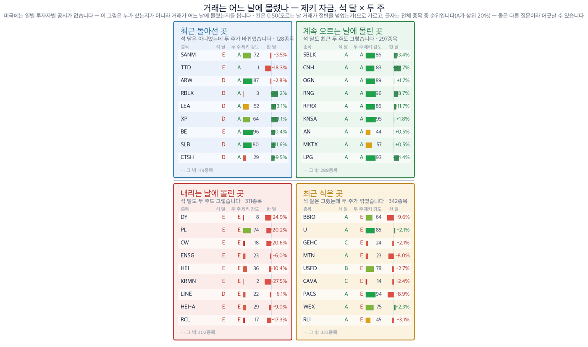

다우 -0.95% | S&P 500 -0.35% | 나스닥 +0.11% | 변동성 지수 15.28 | 정유 VLO +3.18% | 구리 SCCO +5.82% |

| 켜진 등 | 오늘의 국면입니다. 초록은 매수 우위, 노랑은 관망, 빨강은 매수 자제입니다. |
| 채워진 칸 | 7가지 조건 중 몇 개를 통과했는지입니다. 칸이 많이 찰수록 시장 구조가 튼튼합니다. |
| 칸이 다 찼는데 노랑·빨강이면 | 다른 이유로 한 단계 낮춘 것입니다. 그림 아래에 그 이유를 적었습니다. |
| 날짜 | 무엇을 보는가 | 넘으면 어떻게 되는가 |
|---|---|---|
| 9월 10일 | 미국 소비자물가 | 중동발 유가가 물가로 넘어왔는지 이 발표에서 처음 드러납니다 |
| 9월 16일~17일 | 연방공개시장위원회 | 월스트리트저널은 금리 결정과 물가가 다시 초점이 됐다고 오늘 전했습니다 |
| 이번 주 내 | 호르무즈 해협 통항 | 배가 다시 다니면 정제마진이 좁아지고 오늘의 근거가 사라집니다 |
현재 382.52달러 · 오늘 +3.18% · 한 달 +22.4% · 석 달 +44.9% · 제키 강도 95 · 제키 자금 B · 52주 고점 대비 0.0% 미국에서 가장 큰 정유회사 가운데 하나입니다. 한 달 22.4%, 석 달 44.9% 올랐습니다. 9월 4일 종가는 52주 고점과 같았습니다. 오늘 그 고점을 다시 넘었습니다. 값이 오르기 전부터 거래가 오르는 날에 몰려 있었습니다.
확인 신호 — 9월 4일 종가 370.72달러를 웃도는 상태로 이번 주를 마치면 오늘의 상승이 하루짜리가 아니었다는 뜻입니다. 철회 기준 — 호르무즈 통항이 정상으로 돌아오고 값이 9월 4일 종가 아래로 내려가면 정제마진 근거는 사라집니다. |
현재 259.22달러 · 오늘 +1.62% · 한 달 +24.1% · 석 달 +39.3% · 제키 강도 92 · 제키 자금 A · 52주 고점 대비 -0.4% 같은 정유회사이며 제키 자금 등급이 A입니다. 저희가 재는 1,078개 종목 가운데 오르는 날 거래 쏠림이 가장 강한 축에 듭니다. 오늘 상승폭은 밸레로에너지보다 작습니다. 값은 이미 9월 4일까지 석 달 동안 39.3% 올라 있었습니다.
확인 신호 — 9월 4일 종가 255.09달러 위에서 이번 주를 마치고 정제 업종이 함께 오르면 업종 전체의 움직임으로 볼 수 있습니다. 철회 기준 — 밸레로에너지는 오르는데 이 종목만 9월 4일 종가 아래로 내려가면 회사 고유의 문제이므로 정제마진 이야기에서 뺍니다. |
현재 210.33달러 · 오늘 +5.82% · 한 달 +4.2% · 석 달 +16.3% · 제키 강도 85 · 제키 자금 D · 52주 고점 대비 -9.5% 페루와 멕시코에서 구리를 캡니다. 오늘 5.82% 올랐습니다. 다만 9월 4일까지 65거래일 동안의 제키 자금 등급은 D였습니다. 오늘 전까지는 거래가 오르는 날에 몰리지 않았다는 뜻입니다. 그래서 오늘 하루의 상승과 그 이전의 흐름이 어긋나 있습니다.
확인 신호 — 거래량이 50일 평균을 넘긴 채로 9월 4일 종가 198.76달러 위를 이번 주 내내 지키면 자금이 방향을 바꾼 것으로 봅니다. 철회 기준 — 거래량이 50일 평균 아래로 줄면서 9월 4일 종가 근처로 되돌아오면 하루짜리 반응이었다는 뜻입니다. |
현재 76.87달러 · 오늘 +5.69% · 한 달 +6.7% · 석 달 +14.8% · 제키 강도 83 · 제키 자금 D · 52주 고점 대비 -9.0% 미국에 본사를 둔 구리 회사입니다. 인도네시아 그라스버그 광산이 이익의 큰 몫을 냅니다. 오늘 5.69% 올랐고 서던코퍼와 거의 같이 움직였습니다. 두 종목이 함께 움직였다는 것은 회사 소식이 아니라 구리라는 금속에 값이 매겨졌다는 뜻입니다.
확인 신호 — 구리 두 종목이 이번 주를 함께 9월 4일 종가 위에서 마치면 금속 전체의 움직임으로 봅니다. 철회 기준 — 둘 중 하나만 오르고 다른 하나가 9월 4일 종가 아래로 내려가면 금속이 아니라 회사 사정이므로 이 테마는 성립하지 않습니다. |
중동 소식이 가장 먼저 닿을 곳으로 보이는 회사들입니다. 유전에 장비와 기술을 넣고, 원유를 직접 캡니다. 그런데 오늘 슐룸베르거는 0.42% 내렸고 코노코필립스는 0.20% 올랐습니다. 지수보다 나은 정도이지 정유주와는 크게 다릅니다. 이유는 분명합니다. 원유값이 오르면 생산회사의 매출은 늘지만, 새 유전을 파는 결정은 몇 분기 뒤의 일입니다. 정제마진은 오늘 넓어지면 오늘 이익이 됩니다. 기사가 그럴듯해도 값이 따라오지 않으면 종목으로 만들지 않습니다. |
| 테마 | 종목 | 오늘 | 제키 강도 | 근거의 무게 |
|---|---|---|---|---|
| 정제마진 | 밸레로에너지 (VLO) | +3.18% | 95 | 근거 확실 |
| 정제마진 | 필립스66 (PSX) | +1.62% | 92 | 근거 확실 |
| 구리 | 서던코퍼 (SCCO) | +5.82% | 85 | 확인 필요 |
| 구리 | 프리포트맥모란 (FCX) | +5.69% | 83 | 확인 필요 |
| 유전 서비스 | 슐룸베르거 (SLB) | -0.42% | 80 | 테마 제외 |
| 원유 생산 | 코노코필립스 (COP) | +0.20% | 77 | 테마 제외 |
| 종목 | 제키 자금(65거래일) | 한 달 | 오늘 | 읽는 법 |
|---|---|---|---|---|
| 밸레로에너지 (VLO) | B | +22.4% | +3.18% | 이전부터 자금이 따라왔습니다 |
| 필립스66 (PSX) | A | +24.1% | +1.62% | 이전부터 자금이 따라왔습니다 |
| 서던코퍼 (SCCO) | D | +4.2% | +5.82% | 오늘 처음 5%대로 올랐습니다 |
| 프리포트맥모란 (FCX) | D | +6.7% | +5.69% | 오늘 처음 5%대로 올랐습니다 |
| 슐룸베르거 (SLB) | D | +11.6% | -0.42% | 자금도 값도 따라오지 않았습니다 |
| 코노코필립스 (COP) | C | +15.0% | +0.20% | 자금도 값도 따라오지 않았습니다 |

| 점 하나 | 종목 하나입니다. 가로·세로 위치가 두 값을 그대로 나타냅니다. |
| 점 크기 | 최근 한 달 등락폭입니다. 오르든 내리든 크게 움직였으면 큰 점입니다. |
| 점 색 | 제키 강도입니다. 초록일수록 주가가 시장에서 강합니다. |
| 30종목만 | 이름이 겹치면 못 읽기 때문입니다. 가운데 몰린 나머지는 움직임이 거의 없는 종목들이라 뺐습니다. |

| 칸의 위치 | 오른쪽으로 갈수록 첫째 값이, 위로 갈수록 둘째 값이 큽니다. 네 칸의 이름이 그 뜻을 그대로 적고 있습니다. |
| 칸마다 9종목 | 그 칸에서 움직임이 가장 큰 순서입니다. 나머지는 칸 아래에 몇 종목인지만 적었습니다. |
| 한 달 막대 | 0을 가운데 두고 오른쪽이 상승, 왼쪽이 하락입니다. 길이는 같은 칸 안에서만 서로 견주십시오 — 칸마다 기준이 다릅니다. |
| 제키 강도 | 1~99 순위입니다. 막대가 길수록, 초록에 가까울수록 그 종목의 주가가 시장에서 강합니다. |
| 언제 | 무엇을 확인할 것인가 |
|---|---|
| 마감 30분 전 | 정유 두 종목이 오늘 오른 폭을 지킨 채 마치는지 봅니다. 장 막판에 되돌리면 하루짜리 반응입니다. |
| 마감 뒤 | 구리 두 종목의 오늘 거래량이 50일 평균을 넘었는지 봅니다. 넘지 못했으면 자금이 방향을 바꾼 것이 아닙니다. |
| 9월 10일 | 소비자물가에서 에너지 항목이 얼마나 올랐는지 봅니다. 유가가 물가로 넘어가면 금리 이야기가 다시 커집니다. |